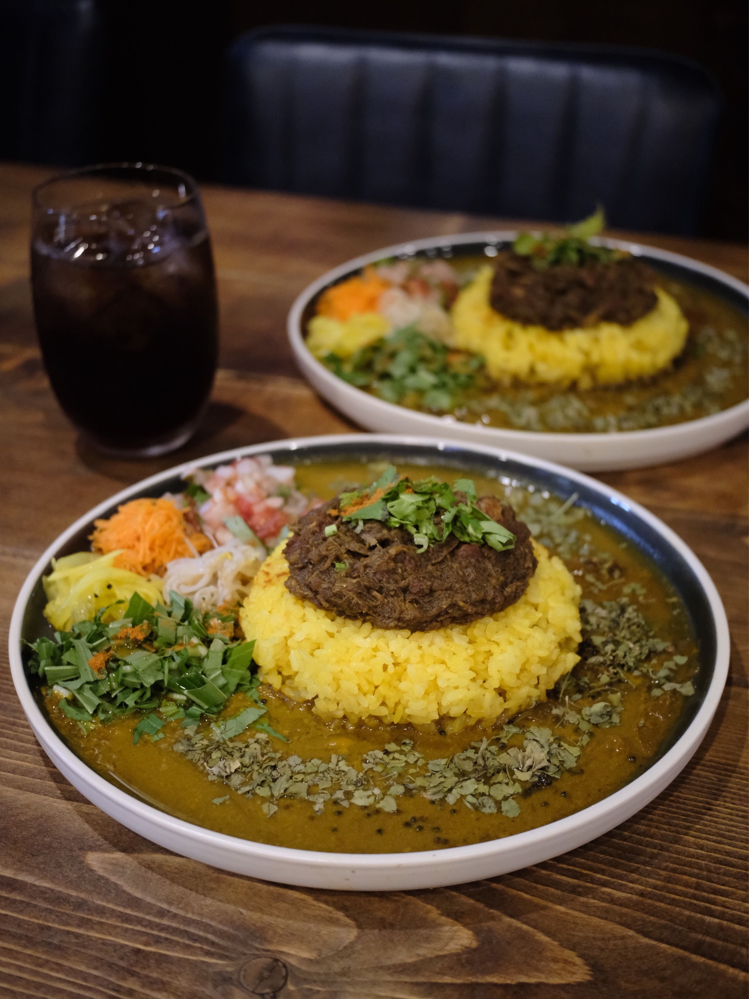
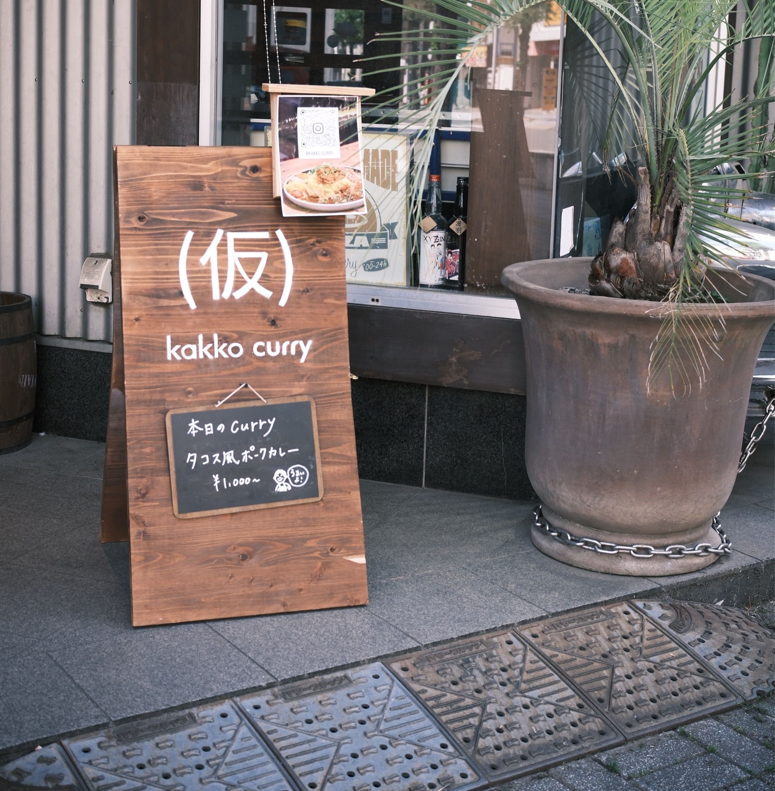

タコス風無水ポーク&スパイスリキッド 2種カレー（仮）
旨みにこだわったポークカレーと、スパイスに特化したリキッドカレー。3種のアチャールとサルサが添えられます。まずはそれぞれの味を、途中からはアチャールを混ぜて。
SPICE CURRY — KAMIFUKUOKA
ポークとリキッド、2種のカレーを一皿で。
上福岡駅から歩いて2分、サンロード沿いのカレー店です。
日曜・月曜／11:00–14:00｜売り切れ次第終了
ABOUT
夜はアメリカンバーになる店を昼のあいだだけ借りて、日曜と月曜に営業しています。バーの外観のままなので、目印は店先の看板です。
その看板は、木の板を買って手作りしたもの。お店は「実は裏側には、失敗して滲んでしまった跡も残っています」と書いています。
2025年5月に開いた店で、メニューにはどれも「（仮）」が付きます。2種カレーは「毎営業ごとにこっそりアップデートしてます」とのこと。同じ皿でも、来るたび少し違います。
クチコミには「リキッドカレー、スパイスが他の食材をしっかり引き立てていて」「一皿で二度美味しい」といった声が並んでいます。

昼のあいだだけ、ここはカレー屋になる。
SHOP INFO
| 店名 | （仮）kakko curry（カッコカリー） |
|---|---|
| 住所 | 埼玉県ふじみ野市上福岡1-5-34 夜はアメリカンバー「TWO FACE」として営業しているお店を、昼のあいだ間借りしています。 |
| アクセス | 東武東上線上福岡駅から徒歩2分 サンロード沿い |
| 営業日 | 日曜・月曜 不定休があります。月ごとの営業スケジュールがInstagramで告知されています。 |
| 営業時間 | 11:00–14:00 売り切れ次第終了です。 |